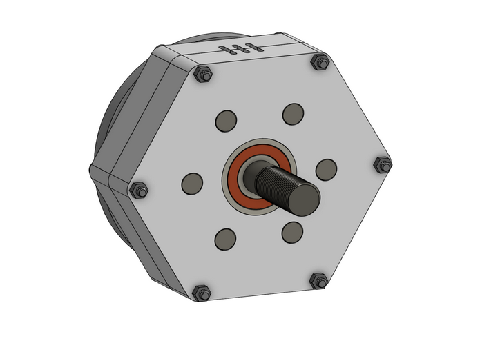
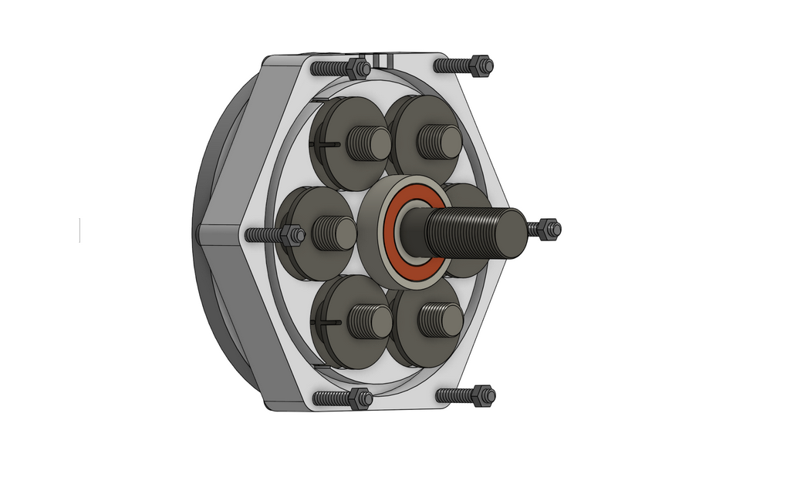
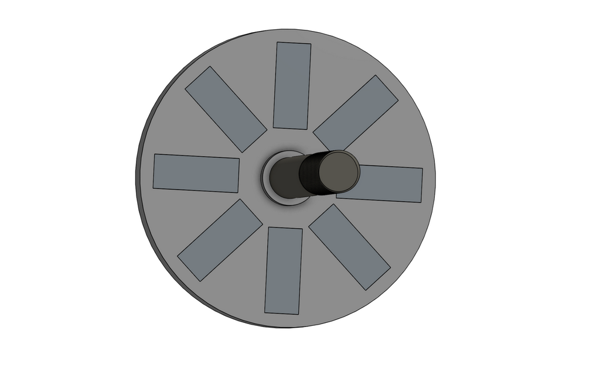

The goal for this project was to design and fabricate an axial flux motor for a personal combat robot I am working on (aka a “battlebot”), ensuring a compact and lightweight design to spin a blade at high speeds whilst maintaining robot mobility.
The biggest design challenge I faced was making the pieces modular, allowing for easy access to key components if needed. Since axial flux motors tend to be more complicated compared to standard ones since circular motion is created due to induced magnetic fields, I ensured every element could easily be taken apart if needed.
To address the complexity of the project, I ensured the motor was modular to allow for easier maintenance compared to traditional methods. By utilizing my custom design, I maintained a lightweight architecture that eliminates cogging torque while delivering high RPMs. The final assembly ensures that the interior can be accessed and serviced rapidly without compromising the motor’s structural integrity.

Full CAD assembly of the Axial Flux Motor

Interior CAD model of the Axial Flux Motor

Rotating disc of the Axial Flux Motor